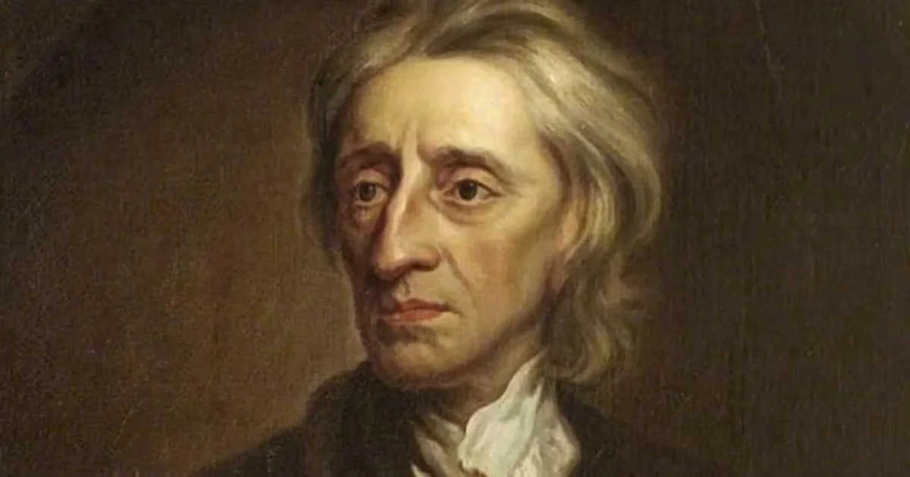

O termo empirismo tem origem na palavra grega empeiria, que quer dizer experiência. Como o próprio nome diz, essa corrente filosófica valoriza o conhecimento através da prática. Dessa forma, a teoria defende que os sujeitos desenvolvem seu aprendizado a partir dos sentimentos, impressões e percepções. A filosofia empirista é baseada em alguns fundamentos: Raciocínio Indutivo – Os métodos indutivos ou indutivos consideram muitas situações específicas para tirar conclusões sobre a realidade geral. Os fatos observacionais são extremamente importantes no raciocínio indutivo. Método experimental – essa metodologia defende a observação sistemática dos fatos para que se chegue a uma conclusão científica. No método não há espaço para especulações. É preciso observar e fazer experimentos. Evidências empíricas – um dos argumentos utilizados pelo empirismo são as experiências sensoriais, a observação da realidade é uma ação realizada pelos sentidos. A partir desse ato pode-se obter a comprovação. Tábula rasa – como citado anteriormente, esse conceito defende a aprendizagem baseada na experiência. Todo o conhecimento é produzido a partir das percepções e vivências logo após o nascimento.
No racionalismo, as pessoas acreditam que a razão é o centro do conhecimento. Os filósofos que representam essa tendência acreditam que a mente humana é responsável pela percepção e organização das informações existentes. Os racionalistas acreditam que, além da organização, o cérebro armazena e dá sentido às informações adquiridas. Esse também é o argumento racionalista de que o conhecimento que os humanos possuem faz parte do raciocínio lógico, somado à argumentação e análise da informação. Essa informação analisada é gerada pelos sentidos e precisa ser compreendida por um sistema racional para que o cérebro possa acessar outros conhecimentos. Descartes desenvolveu o conceito de que grande parte das ideias que temos são inatas. Eles estão em nossas mentes desde que nascemos.

Hume era conhecido por seu extremo ceticismo e empirismo. O filósofo chegou a questionar os fatos e elementos que a ciência e a filosofia parecem ter comprovado a tempos. Com todo tipo de questionamentos e dúvidas, Hume buscava descobrir a origem e a construção da crença humana, não apenas a existência superficial de fatos e elementos. Defensor do empirismo, Hume afirma que todo processo de compreensão começa com uma impressão. É impossível separar pensamentos de sentimentos. O autor define o sentimento como a única coisa que pode ser provada. A percepção dos nossos sentidos é a única realidade que os humanos podem conhecer.
Um dos maiores empiristas britânicos, Locke afirmava que o conhecimento era proveniente da experiência, tanto de origem externa, nas sensações, quanto nas internas, através das reflexões. Explicava que antes de percebermos qualquer coisa, a mente é como uma folha de papel em branco mas, depois que começamos a perceber tudo em volta, surgem as "ideias sensoriais simples". Essas sensações são trabalhadas pelo pensamento, pelo conhecimento, pela crença e pela dúvida, resultando no que Locke chamou de "reflexão". A mente não é um mero receptor passivo. Ela classifica e processa todas as sensações à medida que vai formando nossos conhecimentos e nossa personalidade.Locke defendia a liberdade intelectual e a tolerância. Foi precursor de muitas ideias liberais, que só floresceram durante o iluminismo francês no século XVII.
Ele acreditava que é preciso colocar em dúvida todos os conhecimentos já existentes para, em seguida, buscar alcançar a verdade. O filósofo entendia que a realidade precisava ser contestada por completo e, junto com ela, o que acreditamos e conhecemos. É dessa definição que Descartes forma uma das suas linhas de pensamentos mais conhecidas, a ideia do “penso, logo existo”. Através dessa ideia, Descartes propõe uma diferença entre as ideias claras e distintas, e as ideias duvidosas presentes no universo. Para Descartes, essas ideias claras e distintas são a representação das ideias inatas, que são tidas como verdadeiras. René Descartes, o pai do racionalismo Nascido na França, no ano de 1596, René Descartes foi um filósofo, físico e matemático considerado o criador no método do plano cartesiano e da filosofia moderna. Descartes defendia a ideia de que a razão absoluta é a única forma possível para o desenvolvimento da vida humana.